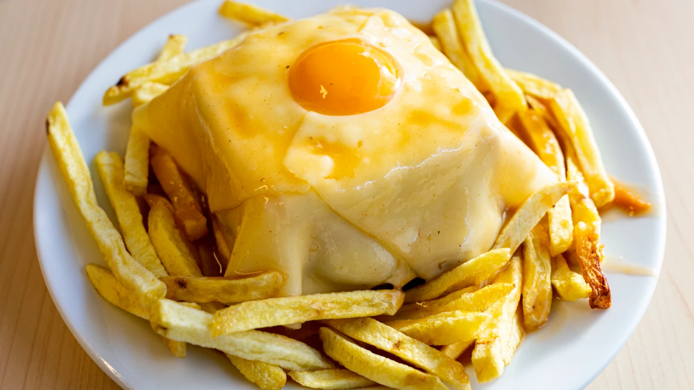
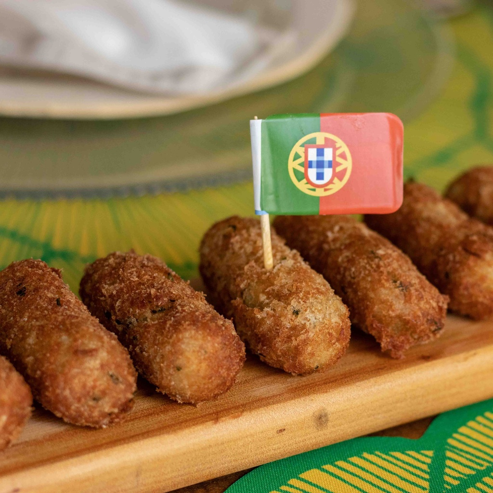
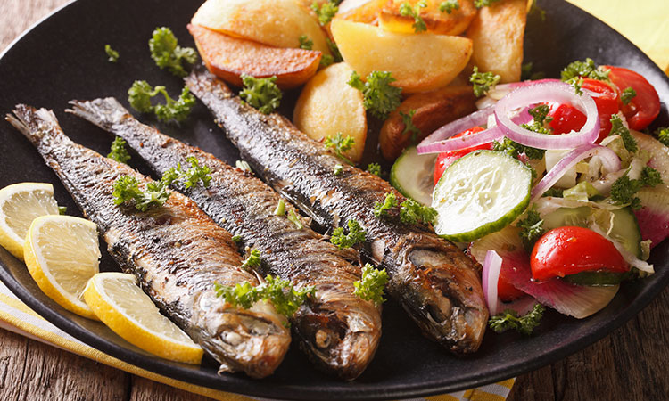

Pratos Típicos
Idolo
Arquitetura
Pontos Turísticos
Pratos Tipicos de Portugal

Ingredientes:
6 fatias de pão de forma
2 unidades de filé bovino
8 fatias de queijo
2 fatias de presunto
2 unidades de salsicha
2 unidades de linguiça fresca
2 unidades de ovo frito (opcional)
2 colheres de sopa de azeite de oliva ou óleo de girassol
Molho de francesinha (receita abaixo)
Pimenta-do-reino
Sal

Ingredientes:
300 g de bacalhau dessalgado e desfiado
3 xícaras (chá) de batatas cozidas e espremidas
1 colher (sopa) de farinha de trigo
Sal a gosto
Pimenta-do-reino a gosto
3 ovos
2 colheres (sopa) de cheiro-verde picado (salsa e cebolinha)
Óleo para fritar

Ingredientes:
16 sardinhas pequenas limpas, sem cabeça e com espinhas (800 g)
2 sachês de Tempero SAZÓN® Toque de Alecrim
Meia colher (chá) de sal
3 colheres (sopa) de Azeite de Oliva Tipo Único TERRANO®
2 batatas grandes, sem casca, cozidas e cortadas em rodelas
2 tomates médios maduros, em rodelas
1 cebola grande, em rodelas
1 pimentão verde médio, em rodelas